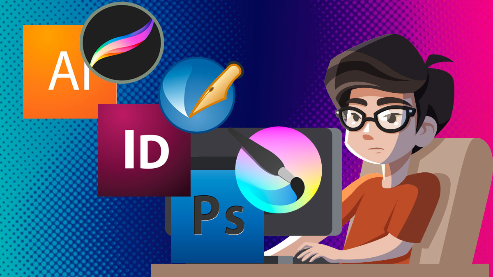
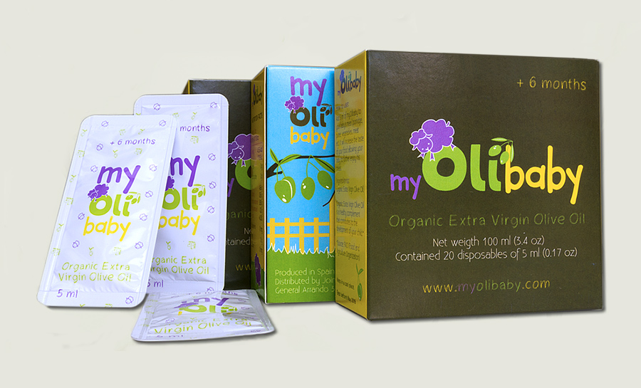

Esta área es la más nueva de todas y está revolucionando la forma de diseñar tanto por sus limitaciones del medio como sus grandes alcances. Es un campo muy cambiante, dinámico y veloz. Un ejemplo claro de la influencia del diseño web y móvil está en los cambios de marca que hacen algunas empresas para adaptarse mucho mejor a este medio de gran importancia en nuestra actualidad. ¿Te fijaste en el rediseño de Google? En esta especialización se incorpora casi todas las enseñanzas de las demás disciplinas. Se necesita la organización y la jerarquía del diseño editorial, la simplicidad y funcionalidad de la identidad corporativa, la percepción visual del publicitario… Las estrategias que utiliza son la navegabilidad, interactividad y la usabilidad son partes esenciales, por lo que esta especialidad estará inevitablemente muy unida al campo de la programación. Hay que tener conocimientos de HTML y CSS al igual que estar familiarizado con los Estándares Web y el diseño UX, la experiencia de usuario en los diferentes dispositivos. Para la experiencia de usuario se requiere de mucha investigación y testeo. En esta misma rama de diseño web/móvil añadiría la necesidad de conocimientos de los CMS (Sistema de Gestión de Contenidos) como wordpress, jumla, drupal…que cada vez está más en uso y del que estaría ligado además de HTML y CSS, el PHP. En general, los diseñadores web/móvil se puede especializar dentro de esta rama en estas diferentes disciplinas. Especialista en UX, CMS o web. En esta última, se suele trabajar mano a mano con puros programadores dentro del equipo.
Diseño de embalaje o packaging
| ¿QUÉ ES? | Este campo está muy ligado al publicitario, pero dedicado al producto. Se preocupa en presentar los envases o empaques de cualquier producto de una manera que consigua una persuasión visual para su venta y una funcionalidad. Está acompañada al diseño de stands, al marketing, cajas, etiquetas, estuches, botellas, latas, cartones y envoltorios. Puedes diseñar la parte visual y la parte de empaque, materiales, formas, etc. dejarla para que se encargue un diseñador industrial. Si lo haces tu mismo puede ser un reto y por tanto más divertido para ti, porque es una especialización en la que puedes explotar tu creatividad. Claro está, si todas las condiciones cliente, tiempo… lo permite. El tiempo siempre es el gran enemigo. |  |
|---|---|---|
¿QUÉ UTILIZAN? Marcas, colores, logotipos, imágenes, textos, ilustración… | ||
FUNCIÓN Y EFECTOS SOCIALES Su principal función es proteger los productos, publicitarlos e información para el usuario sobre el producto en concreto, además de influirlo para su efecto final que es conseguir su venta. | ||
| ¿DÓNDE SUELEN TRABAJAR? Estudios de diseño y freelance. A simple vista no parece muy próspera esta especialización, pero realmente lo es. Trabajo en una imprenta y el diseño envases es una de mis principales tareas, concretamente para un laboratorio de medicina natural, como imaginarás es algo que está cada vez más en auge con el conocimiento de la necesidad del uso de las productos naturales y ecológicos. Añádele a ésto, todos los productos de belleza, alimentación, electrónica… ¡es un sin parar! | PROGRAMAS Illustrator, photoshop, modelado 3D (cinema 4D, estudio max)… | |